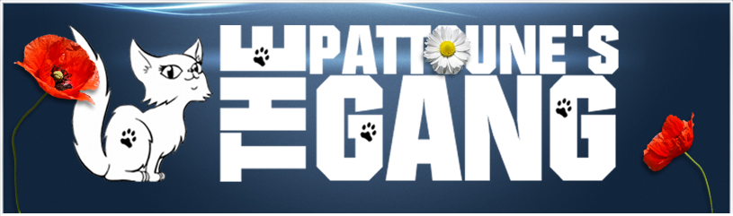

Nos fiches conseil
Voici nos fiches conseil
Les calculs urinaires
La leucose féline ou FeLV
Le FIV ou SIDA du chat
La gale des oreilles
La stérilisation/castration
La teigne chez le chat
La coryza
Le Typhus appelé aussi la panleucopénie féline
Huiles essentielles et chat : attention danger!
La PIF ou péritonite infectieuse féline